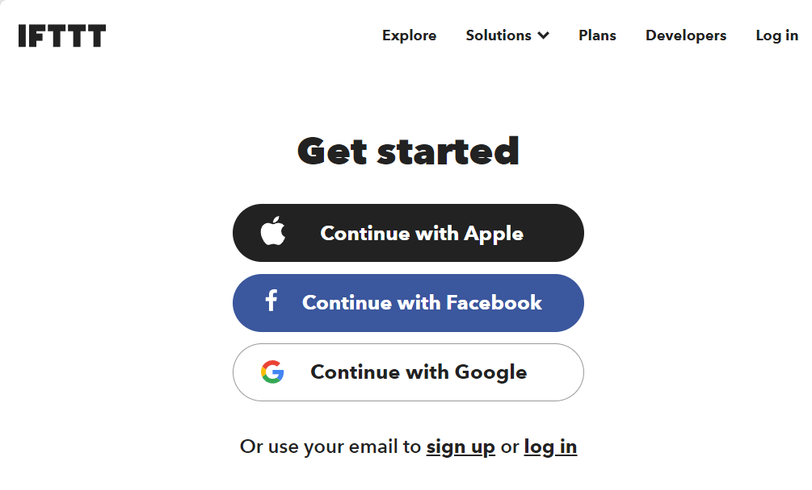
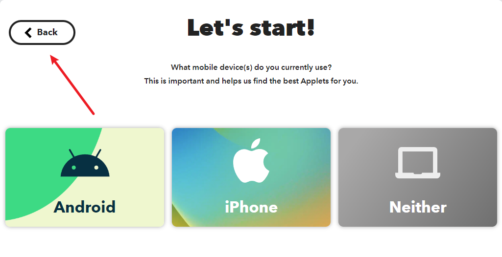
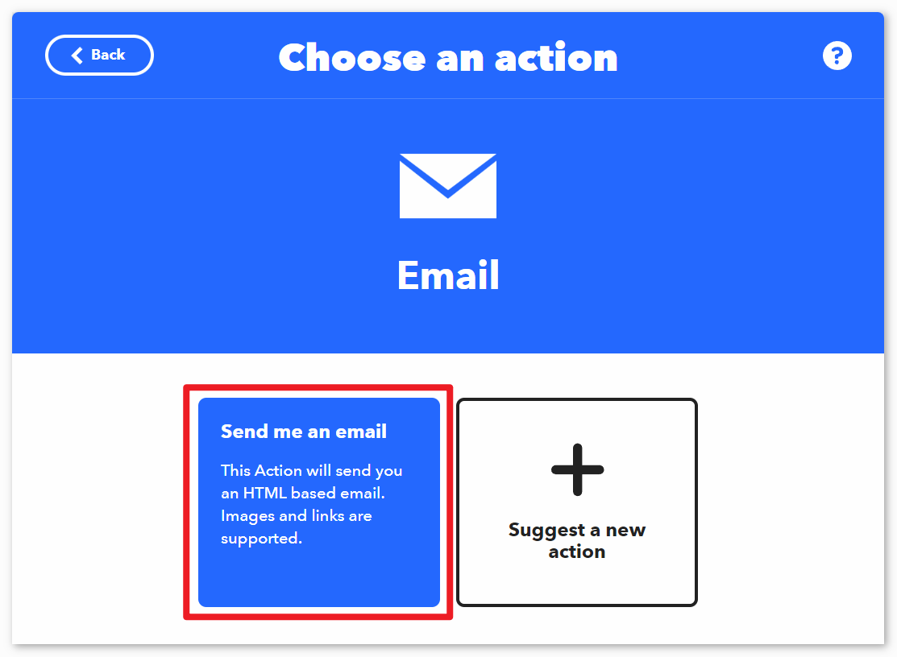
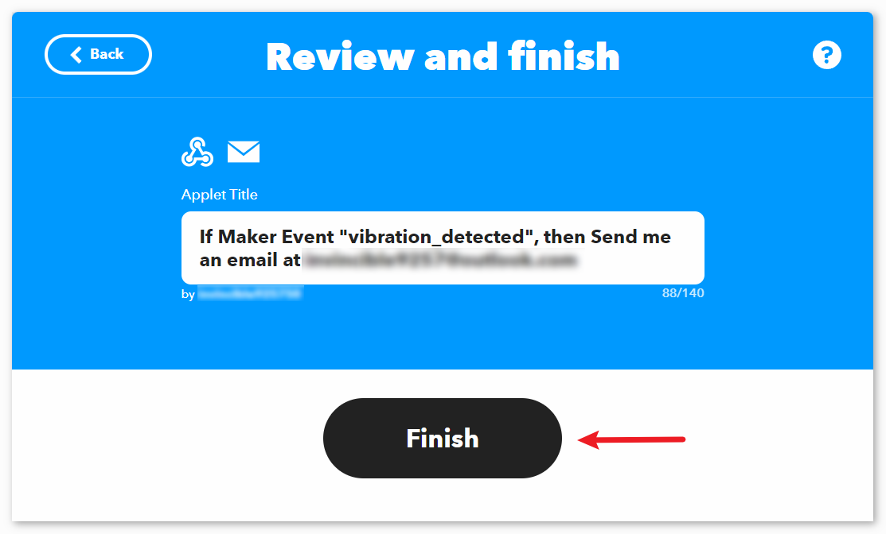
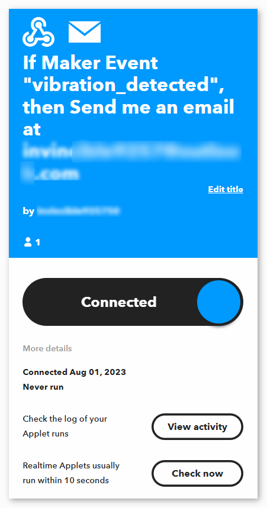
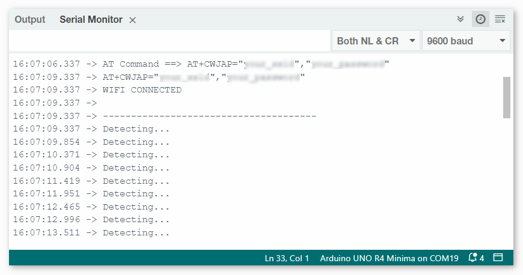

Bemerkung
Hallo und willkommen in der SunFounder Raspberry Pi & Arduino & ESP32 Enthusiasten-Gemeinschaft auf Facebook! Tauchen Sie tiefer ein in die Welt von Raspberry Pi, Arduino und ESP32 mit anderen Enthusiasten.
Warum beitreten?
Expertenunterstützung: Lösen Sie Nachverkaufsprobleme und technische Herausforderungen mit Hilfe unserer Gemeinschaft und unseres Teams.
Lernen & Teilen: Tauschen Sie Tipps und Anleitungen aus, um Ihre Fähigkeiten zu verbessern.
Exklusive Vorschauen: Erhalten Sie frühzeitigen Zugang zu neuen Produktankündigungen und exklusiven Einblicken.
Spezialrabatte: Genießen Sie exklusive Rabatte auf unsere neuesten Produkte.
Festliche Aktionen und Gewinnspiele: Nehmen Sie an Gewinnspielen und Feiertagsaktionen teil.
👉 Sind Sie bereit, mit uns zu erkunden und zu erschaffen? Klicken Sie auf [hier] und treten Sie heute bei!
Vibrationserkennungssystem mit IFTTT
Dieses Projekt implementiert ein Vibrationserkennungssystem mit Hilfe eines Arduino-Boards (Uno R4 oder R3), eines ESP8266-Moduls und eines Vibrationssensors (SW-420). Bei erkannter Vibration sendet das System eine HTTP-Anfrage an einen IFTTT-Server und kann dadurch diverse Aktionen auslösen, wie zum Beispiel das Versenden einer Benachrichtigung oder einer E-Mail.
Um übermäßige Warnmeldungen in kurzer Zeit zu vermeiden, ist das System so programmiert, dass diese HTTP-Anfragen nur im Mindestabstand von 2 Minuten (120.000 Millisekunden) gesendet werden. Dieses Intervall kann nach Bedarf angepasst werden.
1. Den Schaltkreis aufbauen
Bemerkung
Das ESP8266-Modul benötigt einen hohen Stromfluss, um stabil zu funktionieren. Stellen Sie daher sicher, dass die 9-V-Batterie angeschlossen ist.

2. IFTTT konfigurieren
IFTTT ist ein privates Handelsunternehmen, das 2011 gegründet wurde und digitale Automatisierungsplattformen als Dienstleistung anbietet. Die Plattform ermöglicht es den Nutzern, mit einer visuellen Oberfläche plattformübergreifende „Wenn-Dann“-Bedingungen zu erstellen. Stand 2020 zählt die Plattform 18 Millionen Nutzer.

IFTTT steht für „If This Then That“. Einfach gesagt: Wenn bestimmte Bedingungen erfüllt sind, wird eine entsprechende Aktion ausgelöst. Der „If This“-Teil wird Trigger genannt und der „Then That“-Teil wird als Aktion bezeichnet. IFTTT verbindet Smart-Home-Geräte, soziale Medien, Liefer-Apps und vieles mehr, um automatisierte Aufgaben durchzuführen.

2.1 Bei IFTTT anmelden
Geben Sie „https://ifttt.com“ in Ihren Browser ein und klicken Sie auf den zentral platzierten Button „Get started“. Füllen Sie das Formular mit Ihren Informationen aus, um ein Konto zu erstellen.


Klicken Sie auf „Back“, um den Schnellstart zu verlassen, kehren Sie zur IFTTT-Startseite zurück, aktualisieren Sie die Seite und melden Sie sich erneut an.


2.2 Das Applet erstellen
Klicken Sie auf „Create“, um mit der Erstellung des Applets zu beginnen.

Wenn dieser Auslöser
Klicken Sie neben „If This“ auf „Add“, um einen Auslöser hinzuzufügen.

Suchen Sie nach „Webhook“ und klicken Sie darauf.

Klicken Sie auf der folgenden Seite auf „Receive a web request“.

Setzen Sie den „Event Name“ auf „vibration_detected“.

Then That action
Klicken Sie neben „Then That“ auf „Add“, um eine Aktion hinzuzufügen.

Suchen Sie nach „email“ und klicken Sie darauf.

Klicken Sie auf der folgenden Seite auf „Send me a email“.


Legen Sie den Betreff und Inhalt der E-Mail fest, die bei erkannter Vibration versendet wird.
Als Referenz: Der Betreff ist auf „[ESP-01] Detected vibration!!!“ gesetzt und der Inhalt lautet „Detected vibration, please confirm the situation promptly! {{OccurredAt}}“. Beim Versand der E-Mail wird {{OccurredAt}} automatisch durch den Zeitpunkt des Ereignisses ersetzt.

Befolgen Sie die folgenden Schritte, um die Erstellung des Applets abzuschließen.





3. Code ausführen
Öffnen Sie die Datei
04-Vibration_alert_system.inoim Verzeichnisultimate-sensor-kit\iot_project\wifi\04-Vibration_alert_system, oder kopieren Sie den folgenden Code in die Arduino IDE.Tragen Sie die
mySSIDund dasmyPWDdes verwendeten WLANs ein.String mySSID = "Ihr_SSID"; // WLAN-SSID String myPWD = "Ihr_Passwort"; // WLAN-Passwort
Sie müssen auch die
URLanpassen. Hierbei sollten Sie sowohl den von Ihnen festgelegten Ereignisnamen als auch Ihren API-Schlüssel eintragen.String URL = "/trigger/vibration_detected/with/key/xxxxxxxxxxxxxxxxxx";


An dieser Stelle finden Sie Ihren persönlichen API-Schlüssel, den Sie unbedingt geheim halten sollten. Geben Sie den Ereignisnamen als
vibration_erkanntein. Die vollständige URL wird am unteren Ende der Webseite angezeigt. Kopieren Sie diese URL.

Wählen Sie das korrekte Board und den passenden Port aus und klicken Sie auf die Schaltfläche Hochladen.
Öffnen Sie den seriellen Monitor (Baudrate auf 9600 einstellen) und warten Sie auf eine entsprechende Meldung, die den erfolgreichen Verbindungsaufbau anzeigt.


4. Code-Erklärung
Das ESP8266-Modul, das im Kit enthalten ist, ist bereits mit der AT-Firmware vorinstalliert. Daher kann das ESP8266-Modul über AT-Befehle gesteuert werden. In diesem Projekt verwenden wir die SoftwareSerial-Bibliothek, um die Kommunikation zwischen dem Arduino Uno Board und dem ESP8266-Modul zu ermöglichen. Das Arduino Uno Board sendet AT-Befehle an das ESP8266-Modul, um eine Netzwerkverbindung herzustellen und Anfragen zu senden. Weitere Informationen finden Sie unter ESP8266 AT Instruction Set.
Das Uno-Board liest Sensordaten und sendet AT-Befehle an das ESP8266-Modul, welches sich dann mit dem Netzwerk verbindet und Anfragen an die IFTTT-Server sendet.
Einbindung der SoftwareSerial-Bibliothek für die serielle Kommunikation zwischen Arduino und ESP8266
#include <SoftwareSerial.h> SoftwareSerial espSerial(2, 3);
Konfiguration der WLAN-Zugangsdaten und IFTTT-Serverdetails
String mySSID = "Ihre_SSID"; String myPWD = "Ihr_Passwort"; String myHOST = "maker.ifttt.com"; String myPORT = "80"; String URL = "/trigger/xxx/with/key/xxxx";
Definition der Variablen für den Vibrationssensor und die Steuerung der Alarmfrequenz
unsigned long lastAlertTime = 0; const unsigned long postingInterval = 120000L; const int sensorPin = 7;
In der
setup()-Methode Initialisierung der seriellen Kommunikation, des ESP8266-Moduls und Verbindung zum WLAN herstellenvoid setup() { Serial.begin(9600); espSerial.begin(115200); // Initialize the ESP8266 module sendATCommand("AT+RST", 1000, DEBUG); //Reset the ESP8266 module sendATCommand("AT+CWMODE=1", 1000, DEBUG); //Set the ESP mode as station mode sendATCommand("AT+CWJAP=\"" + mySSID + "\",\"" + myPWD + "\"", 3000, DEBUG); //Connect to WiFi network while (!espSerial.find("OK")) { //Wait for connection } }
In der
loop()-Methode Vibrationen erkennen und Alarm senden, falls das Zeitintervall überschritten wurdevoid loop() { if (digitalRead(sensorPin)) { if (lastAlertTime == 0 || millis() - lastAlertTime > postingInterval) { Serial.println("Detected vibration!!!"); sendAlert(); //Send an HTTP request to IFTTT server } else { Serial.print("Detected vibration!!! "); Serial.println("Since an email has been sent recently, no warning email will be sent this time to avoid bombarding your inbox."); } } else { if (DEBUG) { Serial.println("Detecting..."); } } delay(500); }
Die Funktion sendAlert() erstellt eine HTTP-Anfrage und sendet sie über das ESP8266-Modul
void sendAlert() { String sendData = "GET " + URL + " HTTP/1.1" + "\r\n"; sendData += "Host: maker.ifttt.com\r\n"; sendATCommand("AT+CIPMUX=0",1000,DEBUG); sendATCommand("AT+CIPSTART=...",3000,DEBUG); sendATCommand("AT+CIPSEND=" + String(sendData.length()),1000,DEBUG); espSerial.println(sendData); }
Behandlung der AT-Befehle mit der Methode sendATCommand()
Diese Funktion sendet AT-Befehle an das ESP8266-Modul und sammelt die Antworten.
void sendATCommand(String command, const int timeout, boolean debug) { // Print and send command Serial.print("AT Command ==> "); Serial.print(command); Serial.println(); espSerial.println(command); // Send the AT command // Get the response from the ESP8266 module String response = ""; long int time = millis(); while ((time + timeout) > millis()) { // Wait for the response until the timeout while (espSerial.available()) { char c = espSerial.read(); response += c; } } // Print response if debug mode is on if (debug) { Serial.println(response); Serial.println("--------------------------------------"); }
Referenzen